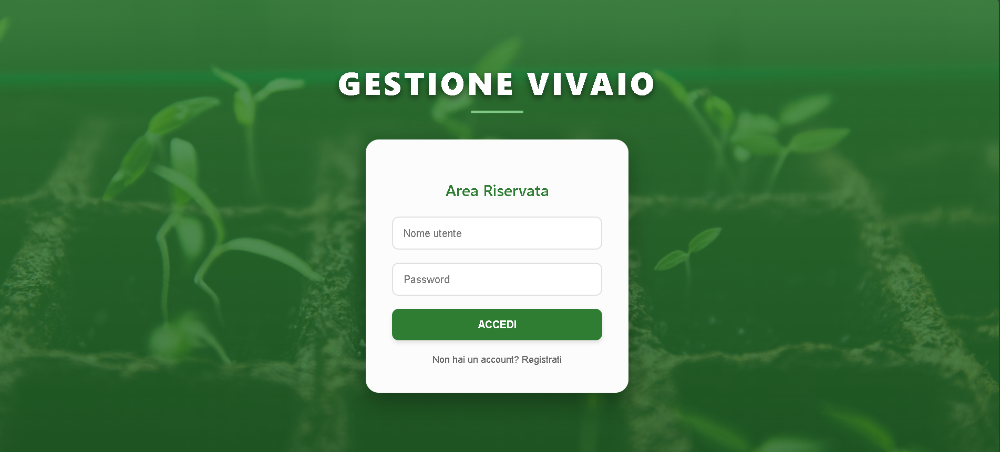
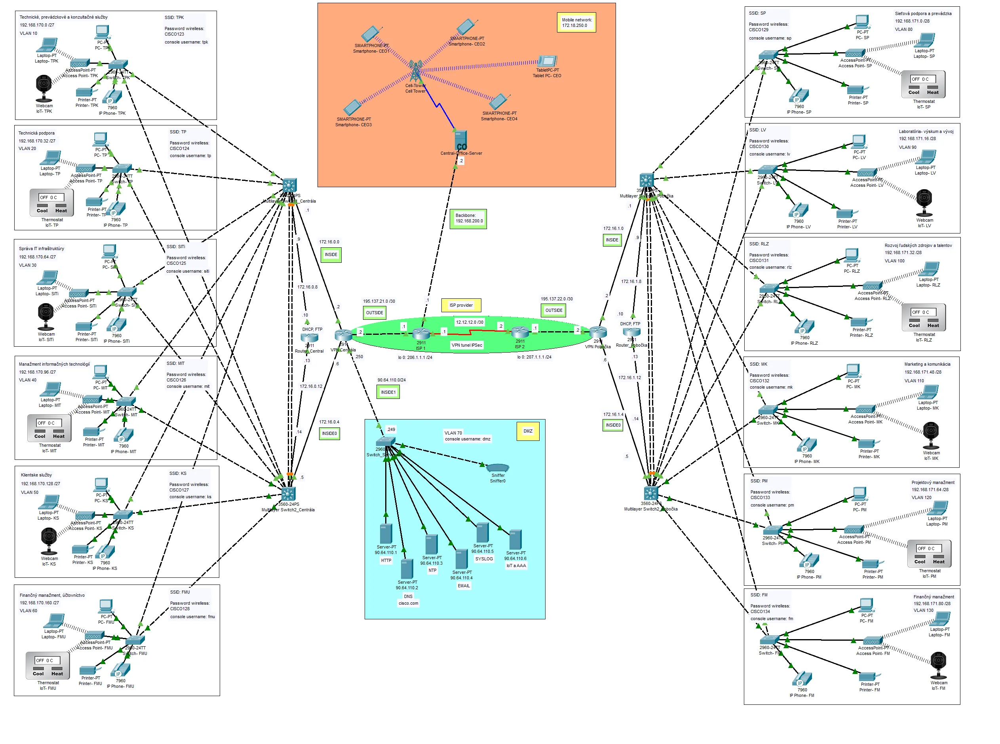
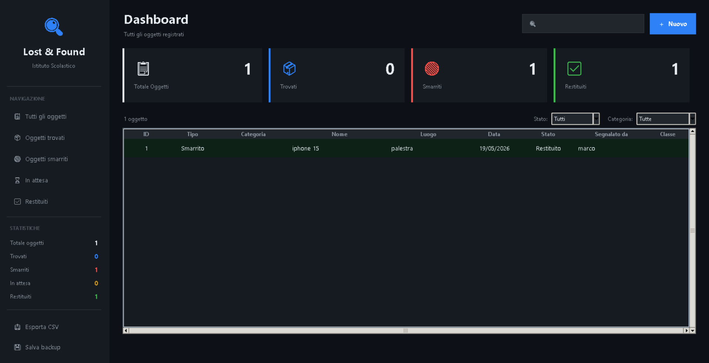

Progetti & Lavori
Una raccolta dei lavori tecnici realizzati nel corso del triennio. Ogni progetto nasce da una necessità concreta e viene sviluppato con un approccio professionale: analisi dei requisiti, progettazione, implementazione e documentazione. I campi di applicazione spaziano dallo sviluppo web alle reti, dalla robotica alla programmazione orientata agli oggetti.

Vivaio — Web Application
Applicazione web full-stack per la gestione di un vivaio, con sistema di autenticazione utenti basato su sessioni PHP, pannello amministrativo per la gestione del catalogo prodotti e carrello acquisti con persistenza su database MySQL. L'interfaccia è completamente responsive e accessibile anche da dispositivi mobili.
Il progetto include: registrazione e login sicuro con hash delle password, gestione dei ruoli utente (admin / cliente), CRUD completo del catalogo piante con immagini, sistema di ricerca e filtro per categoria, e pagina di riepilogo ordine. Il codice è organizzato seguendo il pattern MVC.
Robotica ABB — Pick & Place
Progettazione e simulazione di una cella robotica industriale completa con il robot ABB IRB 1200, dedicata a un processo automatizzato di pick & place in ambiente manifatturiero. Il sistema prevede che il robot prelevi delle lettere corrispondenti alle iniziali del cognome dell’operatore, posizionate inizialmente in modo casuale su appositi riquadri di carico, e le trasferisca verso una seconda area di deposito collocata sul lato opposto della cella robotica. Durante il processo, il robot ricompone automaticamente le lettere nell’ordine corretto, replicando la sequenza originale del cognome.
Il programma RAPID è strutturato con routine modulari, gestione delle eccezioni di produzione, ottimizzazione delle traiettorie per ridurre i tempi di ciclo e integrazione con un PLC virtuale per il coordinamento dell'intera linea. Il progetto è documentato con schemi di layout e analisi dei tempi di ciclo.

Rete LAN Aziendale — Cisco
Progettazione completa di un'infrastruttura di rete aziendale su Cisco Packet Tracer. La topologia include una rete segmentata in VLAN per reparto (Amministrazione, R&D, Produzione, Guest), routing dinamico OSPF tra sedi, Access Control List per la sicurezza dei flussi di traffico e server centralizzati DHCP, DNS e HTTP.
Il progetto è corredato da un piano di indirizzamento IP completo con subnetting VLSM, configurazione degli switch Layer 2 e Layer 3, implementazione del protocollo STP per la ridondanza, e documentazione tecnica con tabelle di routing e schema logico della rete.

Lost&Found scolastico — Python
Applicazione desktop per la gestione di un magazzino aziendale, sviluppata in Python 3 con interfaccia grafica Tkinter. Il software consente la registrazione di articoli, il tracciamento dei movimenti di carico e scarico, la gestione delle scorte minime con sistema di allerta e la generazione di report periodici.
I dati vengono persistiti su file JSON con backup automatico, con la possibilità di esportare reportistica in formato PDF tramite la libreria ReportLab. Il progetto applica i principi della programmazione orientata agli oggetti con classi separate per la logica di business e la presentazione.
Progetto da Aggiungere
Questo slot è riservato per il prossimo progetto tecnico. Inserisci qui il titolo, la descrizione, le tecnologie utilizzate e i link al codice sorgente o alla documentazione.
Slot libero per nuovi
progetti futuri.
Duplica una card esistente
e personalizzala.